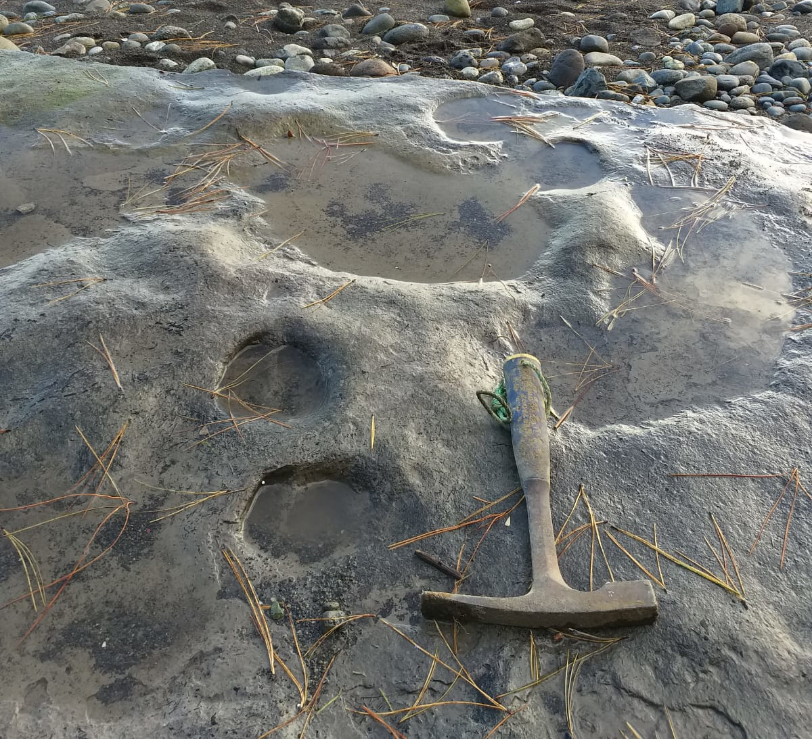

Hace unos cincuenta mil años, donde hoy rompe el mar frente a Puerto Montt, no había playa. Había un bosque.
Alerces, cipreses y coihues crecían junto a la orilla de un antiguo lago, durante un respiro cálido en plena Edad de Hielo. Y por ese barro blando caminó un gigante: el gonfoterio, pariente sudamericano de los elefantes, con sus colmillos curvos y su andar lento.
Cada pisada quedó marcada en el lodo. El barro se secó, el glaciar avanzó, el paisaje cambió por completo… y las huellas siguieron ahí, esperando.
Recién en 2015, en el sector de Punta Pelluco, el antropólogo Ricardo Álvarez notó unas oquedades extrañas en la playa. Junto a la paleontóloga Karen Moreno, de la Universidad Austral de Chile, comenzó una investigación que terminaría cambiando la historia de la megafauna en el país. Eran huellas de gonfoterios y de guanacos, con al menos 44.300 años de antigüedad: el registro más antiguo de estos animales en Chile.
Hoy ese suelo es un Santuario de la Naturaleza. Y sobre él todavía se puede caminar, con cuidado, siguiendo los pasos de un animal que se extinguió mucho antes de que existiera la palabra "Chile".